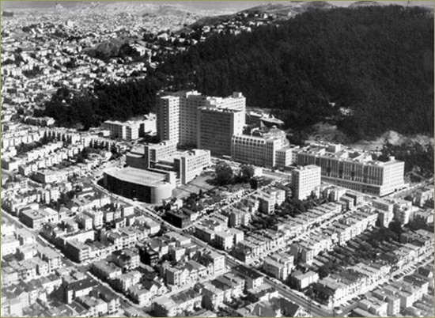

---
---
<!DOCTYPE html PUBLIC "-//W3C//DTD XHTML 1.0 Transitional//EN" "http://www.w3.org/TR/xhtml1/DTD/xhtml1-transitional.dtd">
<html xmlns="http://www.w3.org/1999/xhtml">
<head>
<meta http-equiv="Content-Type" content="text/html; charset=UTF-8" />
<title>Photo - A History of UCSF</title>
<link href="ucsf_history.css" rel="stylesheet" type="text/css" media="all" />
</head>

<body>
{% include google_analytics.html %}
<div id="mainbody">
{% include ucsf_banner.html %}
<div id="rotator" class="v3"><a href="index.html" id="rotator_home_link"></a></div>
<div id="insidebody">
<div id="photocopy">
  <div id="photocopy_text">
    <div id="subhead">Aerial View of the UCSF Campus in the early 1960s</div>
     <br />
     <br/>
     <br/>
<br/>
</div>
</div>
<div id="sidebar">
<div id="sidenav_inside">{% include search_include.html %}<br />
    <div id="sidenavtype">
  <a href="story.html" class="sidenavtype"><strong>THE STORY</strong></a><br/>
  <br/>
  <a href="special_topics.html" class="sidenavtype"><strong>SPECIAL TOPICS</strong></a><br/><br/>
  <a href="people.html" class="sidenavtype"><strong>PEOPLE</strong></a><br/>
  <br/>
  <div id="sidenav_subnav_header"><strong><a href="photos.html" class="sidenav_subnav_type_visited">PHOTOS</a></strong></div>
  <br/>
  <a href="buildings.html" class="sidenavtype"><strong>BUILDINGS</strong></a><br/>
  <br/>
  <a href="index.html" class="sidenavtype"><strong>HOME</strong></a></div>
</div>
</div>
</div>
<br class="clearit" />
{% include footer.html %}
</div>
{% include bottom_js.html %}
</body>
</html>
